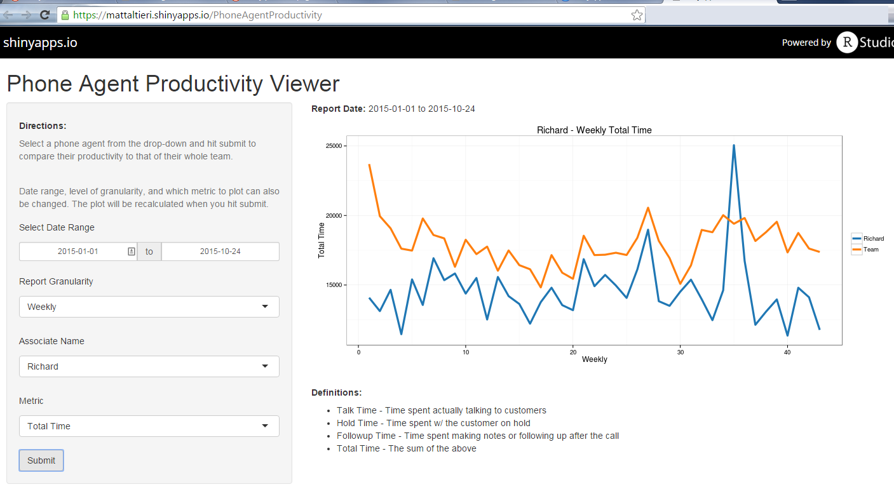

R and ShinyMeeting these goals depends on effective coaching, and effective coaching depends on robust, agile analytics...
... but traditional reporting techniques only allow static reports that must be updated and changed manually by a team of analysts.
With dynamic web reports, each user can generate a custom report -- designed to their requirements -- in seconds!

Submit is clicked, custom code is executed behind the sceneslibrary(dplyr); library(lubridate)
# Process selected associate's data
assoc.data <- prod.data %>%
filter(Associate=="Richard" &
as.Date(Date) >= as.Date("2015-01-01") &
as.Date(Date) <= as.Date("2015-10-24")) %>%
group_by(Timeframe=week(Date)) %>%
summarize(mean.stats=weighted.mean(Total.Time, Calls)) %>%
mutate(data.type="Richard")
# Process team's data for comparison
sum.data <- prod.data %>%
filter(as.Date(Date) >= as.Date("2015-01-01") &
as.Date(Date) <= as.Date("2015-10-24")) %>%
group_by(Timeframe=week(Date)) %>%
summarize(mean.stats=weighted.mean(Total.Time, Calls)) %>%
mutate(data.type="Team")
# Store for plotting
plot.data <- rbind(assoc.data, sum.data)
require(ggplot2); require(ggthemes); tableau <- tableau_color_pal("tableau10")(2)
ggplot(data=plot.data, aes(x=Timeframe, y=mean.stats, color=data.type)) +
geom_line(aes(group=data.type), size=1.5) +
ggtitle("Richard - Weekly Total Time") + xlab("Weekly") + ylab("Total Time") +
scale_color_manual(values=tableau) + theme_bw() + guides(col=guide_legend(title=""))